[2026/07/05]
Formatting Stickers for Print
Today I would like to show you how to design and format your stickers for printing. I’m no professional, but after half a year of drawing stickers (and working at a print shop), I have enough experience in making them to share my process.
The following programs used in this tutorial is Clip Studio Paint (paid drawing software) and Photopea (free editing software). There are many types of stickers; this guide will cover only die-cut stickers and sticker sheets.
DIE-CUT STICKERS
A die-cut sticker is a custom-shaped sticker cut precisely to the outline of your design, and is the type of sticker most artists make.
The first step is to actually draw your sticker. Some crucial things to follow before you start:
Please draw in 300DPI or higher (I personally draw in 400DPI) and make sure that your canvas size is the same size or sliiiightly larger than the actual size of the stickers you will print (set the canvas size using cm/inch, not pixels). This prevents blurriness and makes the final product look crisp and high quality. When you're done drawing, combine the artwork into one layer.
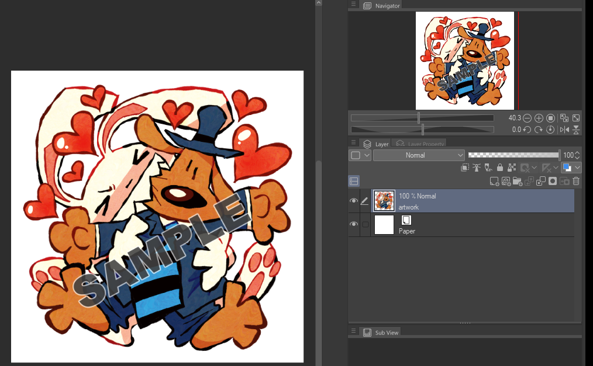
A few tips you may want to follow:
1. Draw in a way that prevents empty spaces inside the design (unless you are doing transfer type stickers, which you're not, since this is a die-cut sticker tutorial). This prevents the sticker from having too much awkward looking empty space in between when you need to make the cut lines.
2. Stickers are printed in CMYK and not RGB; if your drawing program has a CMYK color profile setting, use it. Otherwise, you can adjust it to CMYK on an editing program later. This is what I do, but I don’t recommend it as the colors tend to get muddy if you’re not careful. As such, try your best to replicate CMYK coloring as much as possible.
3. In CSP, it may be helpful for you to use vector layers. Vector drawings can be transformed and adjusted without losing quality, and they have the added bonus of being printed at any size while looking the same. The only downside I can really find with vector layers in CSP is that you are unable to use certain tools like the bucket tool and gradients, and painterly brush strokes + color mixing looks worse. I personally stick to raster layers for the whole process.
4.Many people prefer to create their stickers as matte stickers to make colors look consistent under different lighting, but I prefer glossy stickers. Glossy stickers allow for much more vibrant colors. The same principle applies if you do glossy prints over matte prints. In the end, it is a matter of personal preference.
I’ll teach you how to make vector cut lines for your sticker. This tells sticker cutting machines what path to cut out on your sticker. If you are using a manufacturer, they will almost always automatically create cut lines for you based on the artwork you are uploading. This step is just if you want to shape your cut line to a specific shape, or if the manufacturer requires it (this is rarely asked for, but it can help speed up the process for them).
The next step is to duplicate the artwork layer, and create a stroke outline around your drawing on this new layer. This will be the cutline layer. It's up to you what color this stroke is (it doesn't matter). I recommend the stroke outline to be at least 2mm from the drawing.
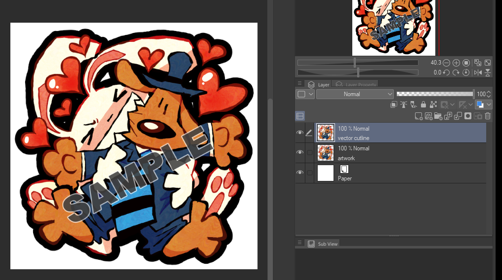
Make sure this cutline layer is all one color. Also make sure to fill in the gaps inbetween.
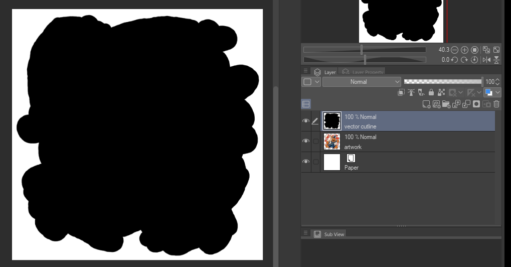
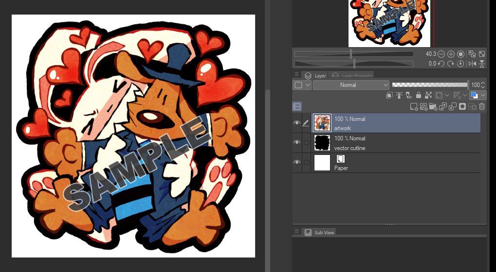
Now you will have two layers; an artwork layer, and a cutline layer. Save this file as a .psd file, and import it to Photopea. The interface should look like this (delete any unneeded layers like the paper layer):
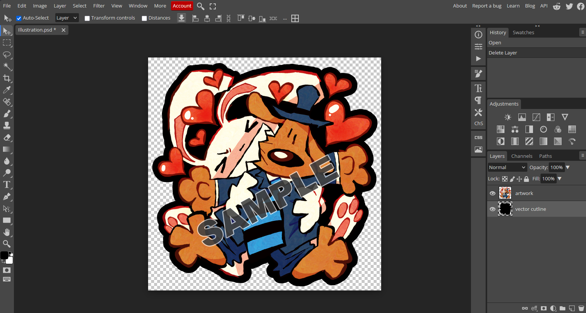
To vectorize the cutline, click on the cutline layer, then go to Image -> Vectorize Bitmap.
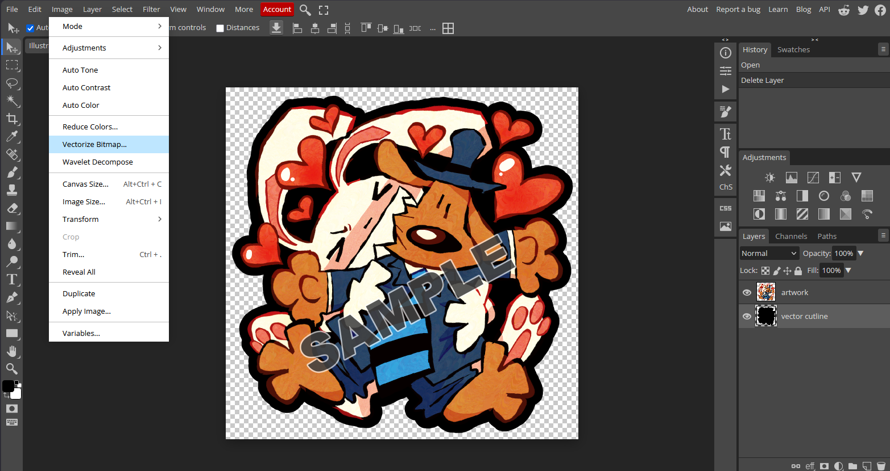
You will be greeted with this screen. Hit "OK".
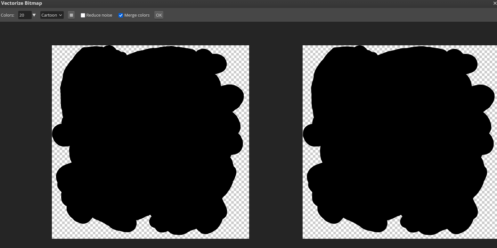
The cutline will now be a blue vector line.
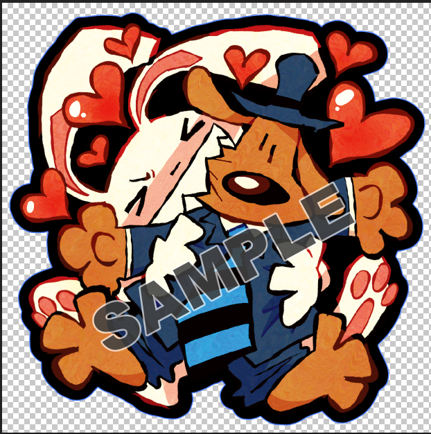
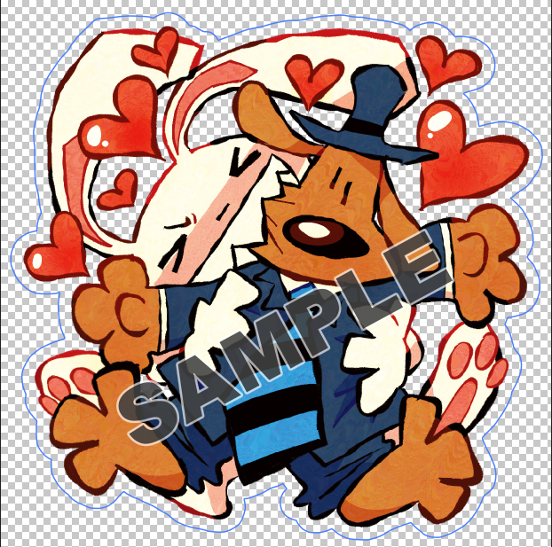
Save this as a .psd file, or whatever file your manufacturer asks you to format it as. You should now have one raster layer of your artwork, and one vector layer of the cutline. This is all you need to print and cut your sticker. The advantage of using this method is that you can draw what shape you would like the cutline to be on your drawing program and vectorize it easily on Photopea; you don't need advanced vector program knowledge to create complex vector cutlines.
Your final sticker will have a white outline (if you are doing regular matte/glossy vinyl stickers), like this:
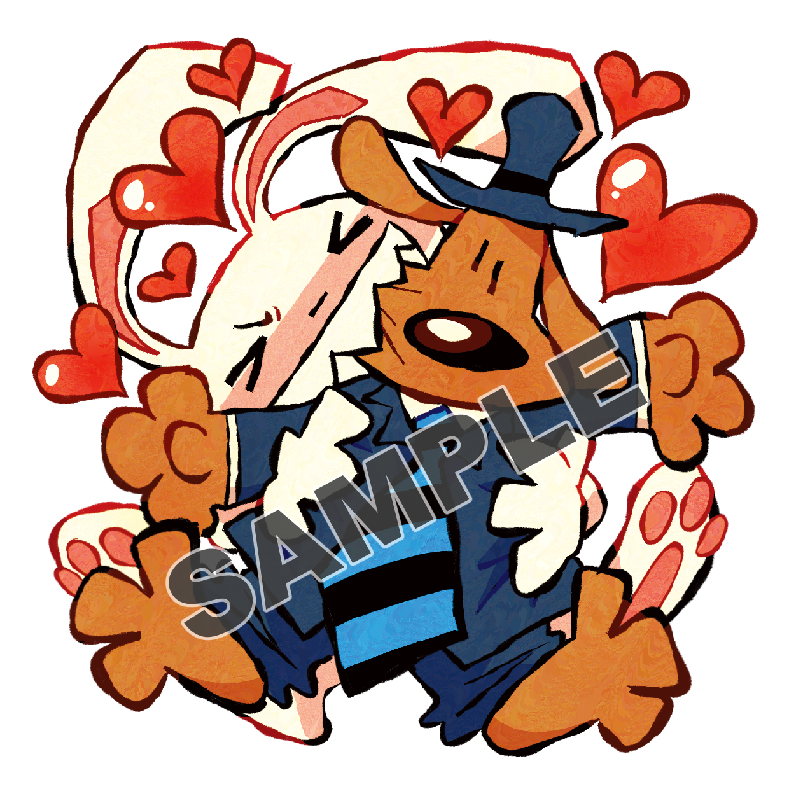
However, if you would like the outline to be in a different color, there’s another step you must take - adding a colored outline bleed layer. On your drawing program, duplicate your cutline layer. This new layer will be the color outline bleed layer. Add a stroke in the color you would like the outline to be, and make sure it has at least a 5mm-1cm bleed from the cut outline.
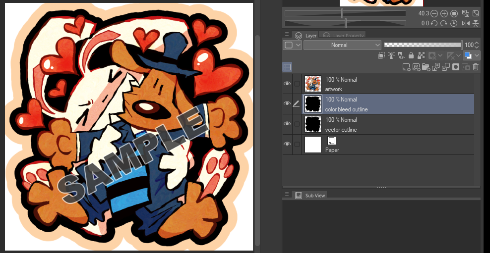
Then, color this new layer enitrely in the color you would like the outline to be. This will be the color bleed outline layer.
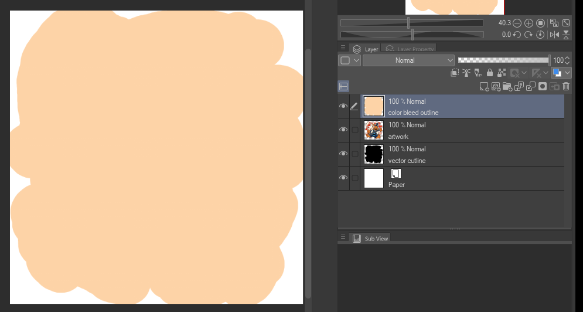
Make sure it is under the artwork layer.
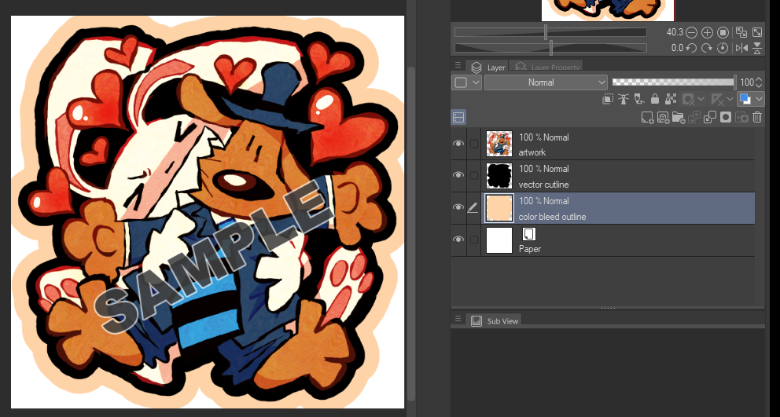
You will now have three layers instead, an artwork layer, a cutline layer and a colored outline bleed layer. Save this as a .psd file, and repeat the steps I have mentioned before to vectorize the cutline.
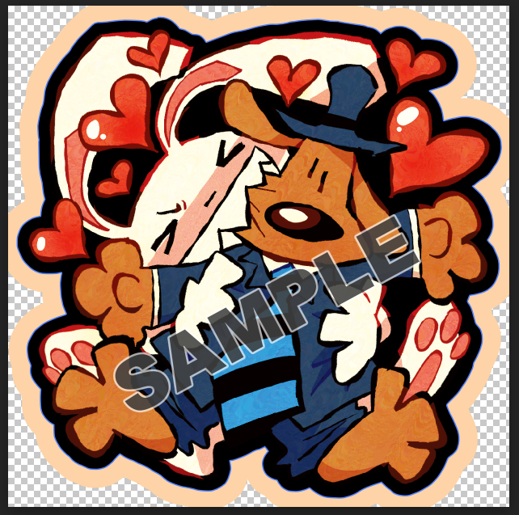
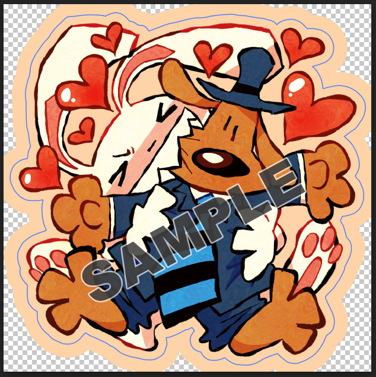
Save this as a .psd file, or whatever your manufacturers asks for. You will now have a raster layer of your artwork, an extra raster layer under for the color bleed, and one vector layer of the cutline. Make sure to name the layers accordingly so your manufacturer isn't confused.
It is vital that you clearly communicate to your manufacturer beforehand if you would like to create a sticker with a differently colored outline; otherwise they will just print the artwork with the colored outline, and then add another white outline around it and cut from that.
Here's what the final product looks like!
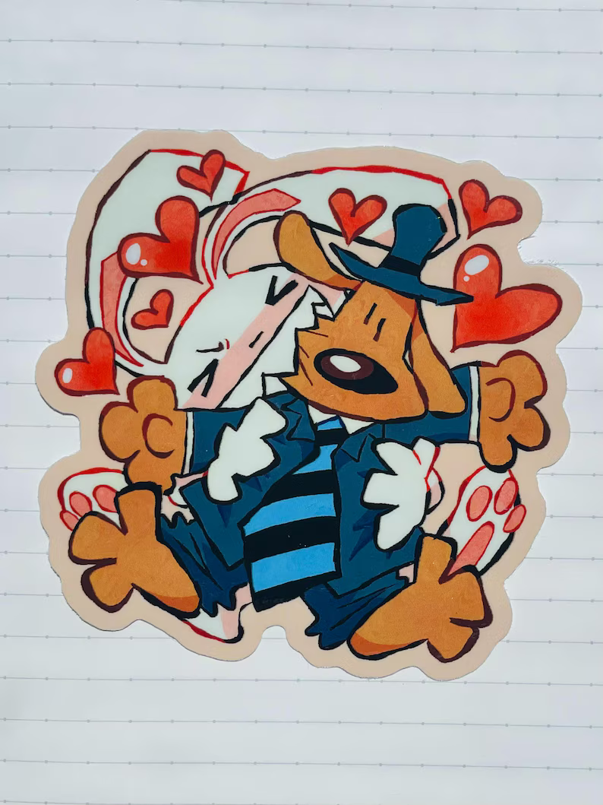
White vinyl is the most common type of vinyl die-cut stickers are made from. This is an opaque white vinyl where ink directly prints on top. However, other types of vinyl exist that create different types of stickers; holographic stickers, clear stickers, prismatic stickers… etc. Any transparent part on the artwork file will allow this vinyl to show through. You will have to consult other guides for this; I only do regular matte/glossy white vinyls!
STICKER SHEETS
A sticker sheet is a single backing page that contains multiple custom stickers. The sticker sheets you see in stores usually contain a separate backing page and a sheet where you can peel stickers off, but many manufacturers opt to put the stickers and the backing paper itself into peelable sheet.
If you are doing sticker sheets, make the stickers as you would like you do die-cut stickers,
but pay close attention to how much space is inbetween each sticker. You’ll need enough space for the cutlines to be placed (at least 1.5mm), and then you need even more space for color bleeds under the cutlines (at least 2mm from the cutlines). Make sure you leave enough space between each sticker!
If you have stickers that take up a lot of space on the sheet, the backing won’t be as visible anymore. If you decide to do a custom design for the backing page, be careful, because the sticker bleeds will often cover this up more than you think!
You would expect the sticker sheet to come out like this:
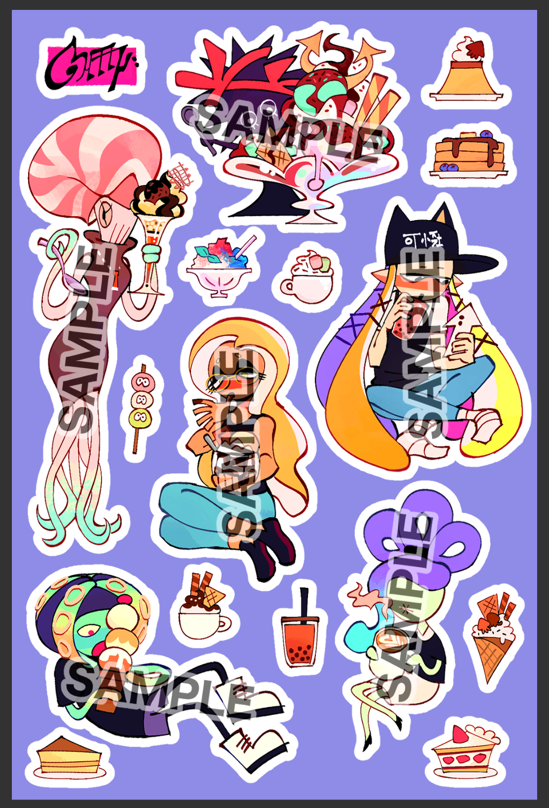
But due to formatting constraints, it will look more like this!
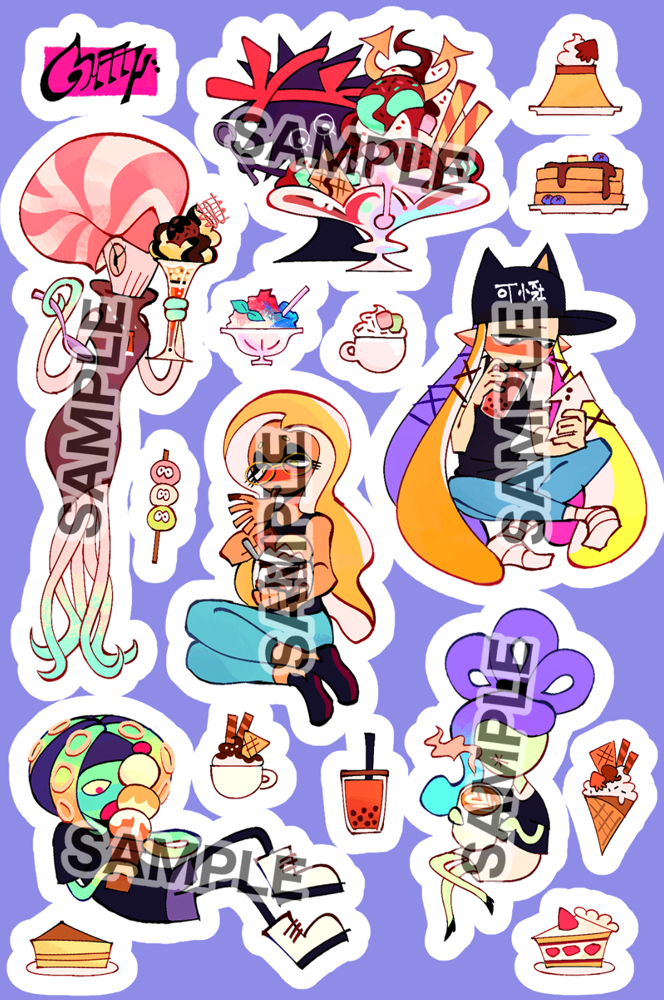
I hope this helps. I love making stickers, it's fun and relatively inexpensive to do. You should try to make some yourself!